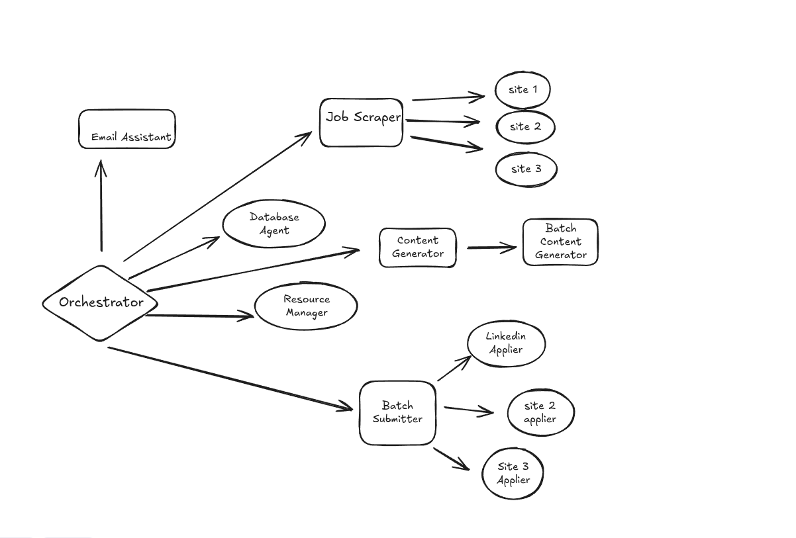

Job Application Assistant
A sophisticated multi-agent job application automation system built on Google's Agent Development Kit (ADK). This system automates the complete job application workflow: scraping jobs from multiple sites, creating Google Drive folders with resumes, generating tailored cover letters, and submitting applications.
🏗️ System Architecture
User Input → Orchestrator Agent → Specialized Sub-Agents → Database & Google Drive

Agent Hierarchy
orchestrator_agent (LlmAgent)
├── job_scraper_agent (scrapes from 5+ sites)
├── resource_manager_agent (creates folders, copies resumes)
│ └── batch_resource_manager (handles bulk folder operations)
├── content_generator_agent (analyzes fit, writes cover letters)
│ └── batch_content_generator (handles >25 jobs with rate limiting)
├── database_agent (database operations)
├── application_submitter_agent (automated submissions)
│ └── batch_submitter (sequential job applications)
└── email_assistant_agent (email classification)
🔑 Key Features
- Multi-Site Job Scraping: LinkedIn, Indeed, Glassdoor, ZipRecruiter, Google Jobs
- Smart Deduplication: Prevents duplicate applications across sites
- Chrome Extension: Manual job saving from any website with one-click integration
- Google Drive Integration: Automated folder creation and document management
- AI Content Generation: Personalized cover letters using Gemini models And Resumes
- Browser Automation: Headless job application submission with CAPTCHA solving
- Email Classification: Process job-related emails automatically
- Batch Processing: Handle large volumes with rate limiting
📚 Documentation
- Master Overview - Comprehensive system documentation
- Chrome Extension Guide - Extension setup
- Agent-specific documentation in each sub-agent folder